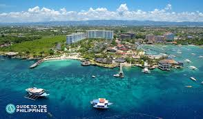

Cebu is rich in history and culture, offering numerous historical sites that attract visitors from around the world. Here is a review of 10 notable historical places in Cebu:
Magellan's Cross is a historical site in Cebu City where Ferdinand Magellan planted a cross upon his arrival in the Philippines. It symbolizes the arrival of Christianity in the country.
Fort San Pedro is the oldest and smallest fort in the Philippines. It was originally built to protect the Spanish settlement from pirate attacks.
This basilica is home to the Santo Niño de Cebu, a statue of the child Jesus that is highly revered by many Filipinos.
Casa Gorordo Museum offers a glimpse into the lifestyle of the Filipino elite during the Spanish colonial period. It showcases antique furniture and historical artifacts.
The Cebu Metropolitan Cathedral is the oldest Roman Catholic cathedral in the Philippines. It has been a central place of worship for Cebuano Catholics for centuries.
Colon Street is the oldest street in the Philippines. It is named after Christopher Columbus and is known for its historical significance and vibrant commercial activity.
The Taoist Temple in Cebu City serves as a place of worship for followers of Taoism. It features intricate designs and offers a panoramic view of the city.
This house is one of the oldest in Cebu and reflects traditional Filipino architecture and lifestyle during the Spanish era.
Mactan Shrine commemorates the Battle of Mactan where Lapulapu, a local chieftain, defeated Ferdinand Magellan.
The Fort San Pedro Museum is located within the fort and displays historical memorabilia and exhibits related to Cebu’s colonial past.
These historical sites provide a rich insight into Cebu's past and its cultural heritage. Each place tells a unique story and contributes to the tapestry of Cebu's history.